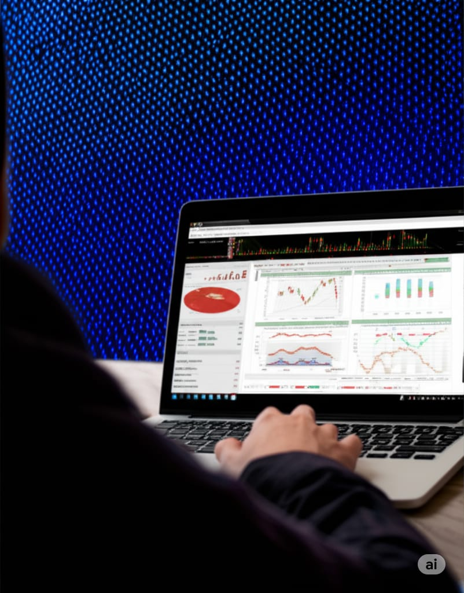

Titan Capital: Tu Socio Estratégico en los Mercados Financieros
Nuestra Gama de Herramientas y Servicios de Trading
Plataforma de Análisis Técnico Avanzado y profesional
Visualiza el mercado con precisión y toma decisiones informadas.
Accede a una interfaz intuitiva con gráficos interactivos, una amplia biblioteca de indicadores técnicos personalizables y herramientas de dibujo avanzadas. Analiza patrones, tendencias y puntos clave de entrada/salida para cualquier activo.
Asesoría Estratégica Personalizada para Traders principiantes

Guía experta para refinar tu estrategia y gestión de riesgos.
Trabaja uno a uno con nuestros expertos en trading para desarrollar y optimizar tu plan de operaciones, mejorar tu gestión de capital y superar desafíos psicológicos. Recibe retroalimentación personalizada y mentoría continua.
Indicadores y Sistemas de Trading Algorítmico funcional
Automatiza tu trading con soluciones diseñadas a medida.
Desarrollamos indicadores técnicos personalizados y sistemas de trading algorítmico (Expert Advisors) adaptados a tus estrategias. Backtesting riguroso y optimización para maximizar tu rendimiento con el mínimo esfuerzo manual.